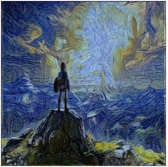

기술의 발전이 변화시킬 미래에 가치를 느껴 공과대학에 진학하였습니다.
또한 하루하루 성장하길 원하는 저의 성향에 맞게, 어디서든 공부할 수 있는 프로그래밍에 매료되었습니다.
완벽을 추구하는 장인같은 프로그래머가 되기 위해서 힘들어도 포기하지 않고 계속해서 나아가겠습니다.
SKILLS
JAVASCRIPT
JAVA
DATABASE
PROJECT
All
ARCHITECTURE
DB
QUANT
ML
MODELING
CPU
CPU verilog implementation
Pipeline and branch predictor is implemented.
LSTM
LSTM solve long term dependency.
Stock Prices Prediction
Graph of Samsung's stock price prediction
Higher accuracy was achieved by utilizing the semiconductor sector cycle
and the transaction price of each purchase subject. In particular, It's a strong model for predicting tendency of stock.
Mysql databse
Basic college database
More specific key design and relations can be modified later.
GAN on MNIST
Result of Generative Adversarial Network on MNIST
It uses GAN to create fake images of MNIST.
Conditional GAN on MNIST
Result of CGAN on MNIST
It uses Conditional GAN to create fake images of MNIST. CGAN shows higher resolution and
faster learning speed than GAN.

Neural Style Transfer
starry night style zelda landscape
It changes Zelda landscape drawings to Gogh style using machine learning.
3D Modeling with blender
character modeling
Basic body structure. I need to add hair and materials later.